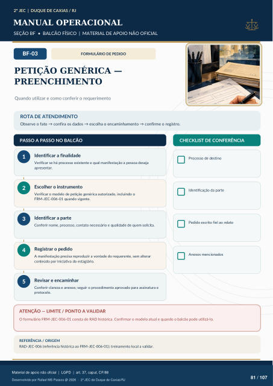

FORMULÁRIO DE PEDIDO
PETIÇÃO GENÉRICA —
PREENCHIMENTO
Quando utilizar e como conferir o requerimento
ROTA DE ATENDIMENTO
Observe o fato → confira os dados → escolha o encaminhamento → confirme o registro.
PASSO A PASSO NO BALCÃO
CHECKLIST DE CONFERÊNCIA
Identificar a finalidade
Verificar se há processo existente e qual manifestação a pessoa deseja apresentar.
Escolher o instrumento
Verificar o modelo de petição genérica autorizado, incluindo o FRM-JEC-006-01 quando vigente.
Identificar a parte
Conferir nome, processo, contato necessário e qualidade de quem solicita.
Registrar o pedido
A manifestação precisa reproduzir a vontade do requerente, sem alterar conteúdo por iniciativa do estagiário.
Revisar e encaminhar
Conferir clareza e anexos; seguir o procedimento aprovado para assinatura e protocolo. Processo de destino Identificação da parte Pedido escrito fiel ao relato Anexos mencionados
ATENÇÃO — LIMITE / PONTO A VALIDAR
O formulário FRM-JEC-006-01 consta de RAD histórica. Confirmar o modelo atual e quando o balcão pode utilizá-lo.
REFERÊNCIA / ORIGEM
RAD-JEC-006 (referência histórica ao FRM-JEC-006-01); treinamento local a validar.
Ver também o infográfico original (página 81)
